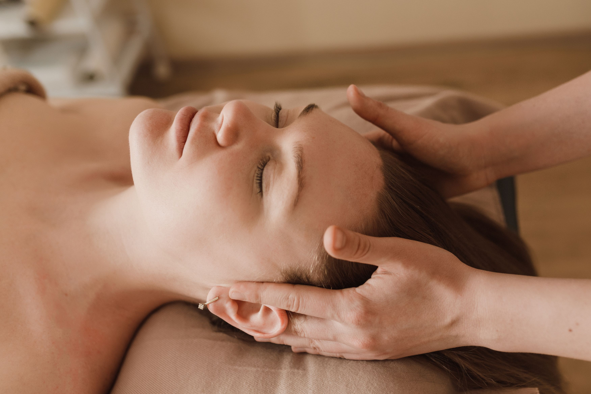

Biodynamic Craniosacral Therapy

Throughout life, our bodies continually adapt to physical injuries, emotional stress, trauma, illness, and the demands of everyday life. These experiences can leave patterns of tension in the body’s tissues, fascia, and fluids, which may be experienced as clear blockages or as more subtle feelings of unease or not feeling well on a physical, mental, or emotional level.
Biodynamic Craniosacral Therapy works with these patterns of tension in the body. It is a gentle approach based on the understanding that the body has an inherent capacity for self-regulation and reorganization.
The term craniosacral refers to the cranium (skull) and the sacrum (the triangular bone at the base of the spine). Together with the spinal column, central nervous system, surrounding membranes, and cerebrospinal fluid, these structures form what is referred to as the craniosacral system.
Cerebrospinal fluid surrounds and protects the brain and spinal cord and is essential to the functioning of the central nervous system. It circulates through the brain's ventricular system and the spaces surrounding the brain and spinal cord. Cerebrospinal fluid is fundamental to the concepts underlying Craniosacral Therapy, as this fluid is understood within Craniosacral Therapy to move and express itself through very subtle rhythms that can be perceived through palpation by a craniosacral practitioner.
During a session, very light hand contact is used to listen, with attentive presence, to these rhythms as they can be felt throughout the body.
Rather than trying to correct or change these rhythms, the biodynamic approach gently follows them and subtly invites them to express themselves more naturally and with greater balance. The work is not only about sensing rhythms and movement, but also about becoming aware of a greater stillness that can be felt in the background — a quiet, underlying presence from which movement and change can arise. An experienced practitioner learns to attune to and rest in this stillness, creating a calm and receptive presence in which the body’s own processes can unfold. This can be understood as creating space for the body's inherent capacity for self-healing.
As a client, you may experience this process as deep relaxation, a sense of letting go, and a greater feeling of ease within the body and mind, supporting balance and overall wellbeing.